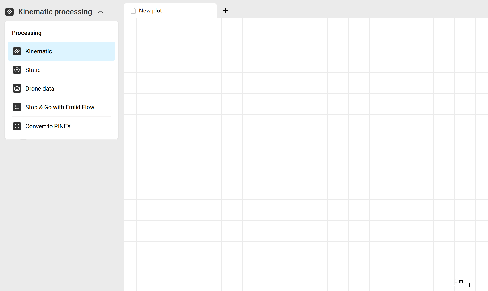
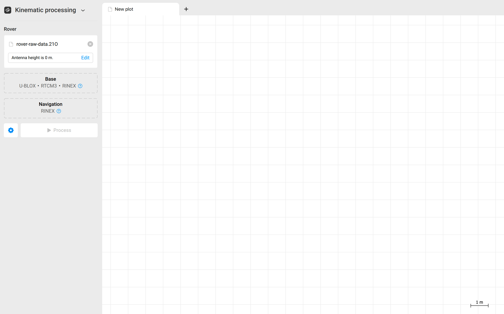
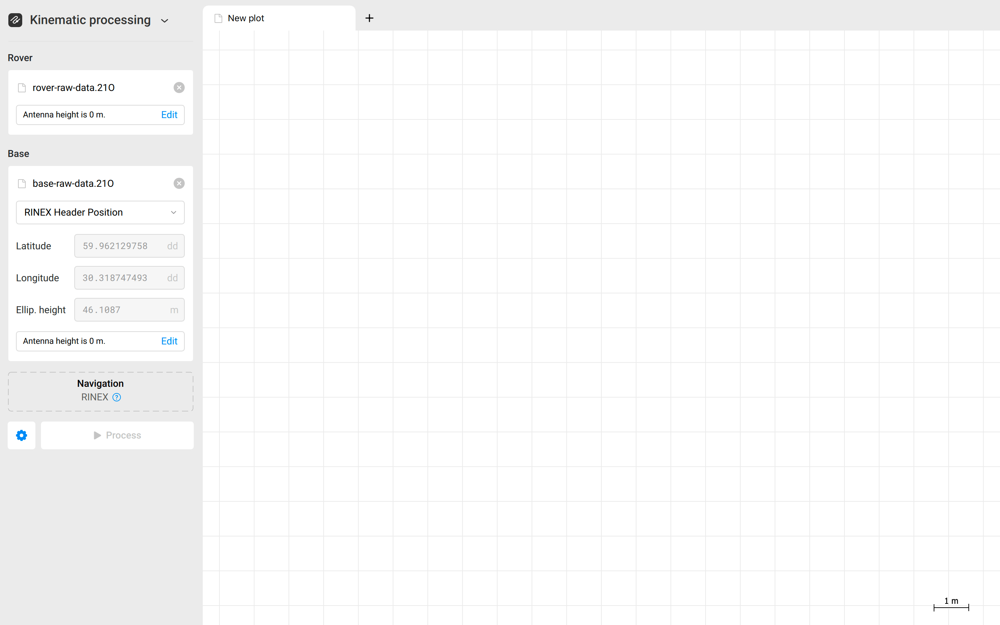
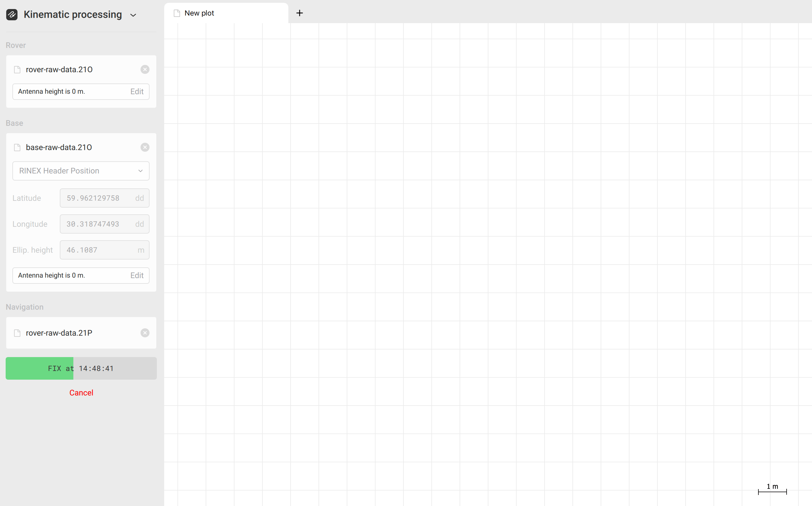
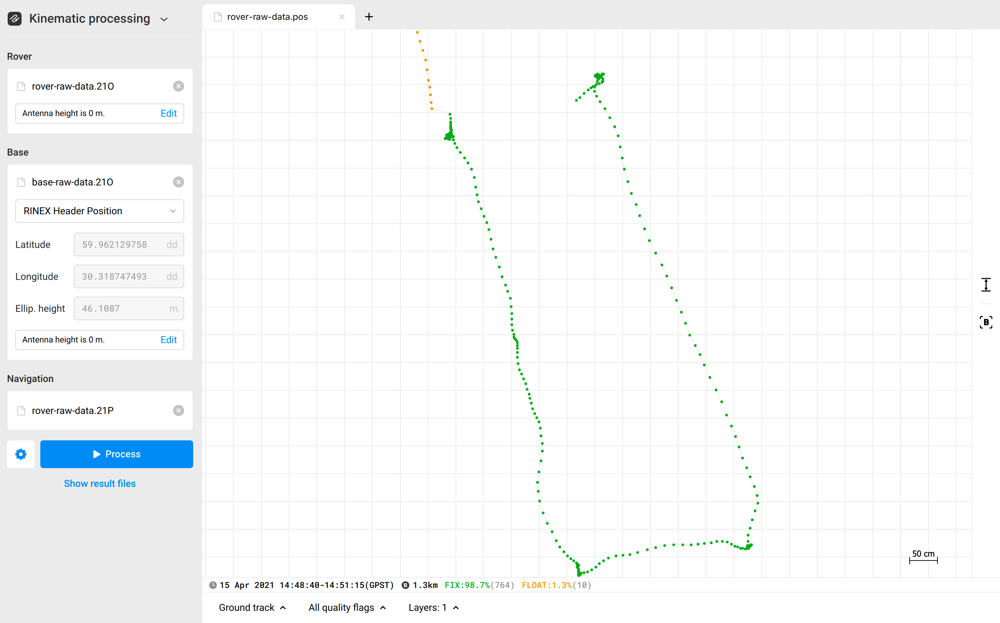

flowchart LR
A[Chapter 1<br/>Foundations & Geodesy] --> B[Chapter 2<br/>IBGE RBMC Data Retrieval]
B --> C[Chapter 3<br/>Emlid Studio PPK]
C --> D[Chapter 6<br/>Troubleshooting & QC]
style A fill:#BBCCEE,stroke:#4477AA,stroke-width:2px
style B fill:#CCDDAA,stroke:#228833,stroke-width:2px
style C fill:#CCEEFF,stroke:#225555,stroke-width:2px
style D fill:#FFCCCC,stroke:#CC6677,stroke-width:2px
Post-Processing GNSS Acquisitions in Brazil: A Practical Guide
From Field Observations to Centimeter-Grade Coordinates: IBGE RBMC, Emlid Studio PPK, RTKlib, and IBGE PPP
Introduction
Accurate spatial positioning is essential for environmental monitoring and remote sensing. RTK (Real Time Kinematic) enabled GNSS (Global Navigation Satellite System)is the most common method for obtaining centimeter-level positioning, but when working in remote field sites without cellular internet or wi-fi, RTK positioning is not possible. Field researchers must thus record raw satellite observations and post-process them in the office.
This manual provides an end-to-end walk-through for researchers with no prior geodetic post-processing experience. The examples given are based on processing locations acquired using the Emlid Reach RS2 GNSS receiver within Brazil, but the procedures are the same worldwide. Just the instruments and data providers will change.
flowchart LR
S[Long Baselines] -.-> A[Chapter 4<br/>RTKlib 30s Decimation]
A --> B[Chapter 5<br/>IBGE PPP Online Submission]
B --> C[Chapter 6<br/>Troubleshooting & QC]
style S fill:none,stroke:none
style A fill:fill:#DDDDDD,stroke:#555555,stroke-width:2px
style B fill:#fff8e1,stroke:#ffa000,stroke-width:2px
style C fill:#FFCCCC,stroke:#CC6677,stroke-width:2px
0.1 Structure of this Manual
Foundations of GNSS Post-Processing for Field Researchers: Explains relative (PPK) vs. absolute (PPP) positioning, the Brazilian SIRGAS2000 reference frame, the critical difference between ellipsoidal (\(h\)) and orthometric (\(H\)) heights, and antenna geometry (ARP vs. APC).
Downloading and Preparing IBGE RBMC Reference Station Data: Guides you through finding the nearest reference station in the Brazilian continuous network, downloading 24-hour observation and broadcast navigation files from GeoFTP, interpreting official station reports (Relatório da Estação), and decompressing Hatanaka files with
CRX2RNX.Relative Post-Processing in Emlid Studio: Static Baselines: Walk through of the Emlid Studio GUI on Windows, pairing stationary Emlid Reach RS2 benchmark logs with RBMC base station data, configuring the antenna offset, overriding base station coordinates, and evaluating Fix vs. Float static solutions.
Preparing RINEX Observations with RTKlib: 30-Second Decimation and Formatting: Explains why static PPP requires 30-second epoch intervals, and provides a step-by-step tutorial using the RTKCONV GUI to decimate high-rate files and format standard headers.
Submitting to IBGE PPP and Interpreting Geodetic Reports: Details online submission to the IBGE PPP service, choosing antenna calibration models, and reading the official PDF report to extract SIRGAS2000 coordinates, formal standard deviations, and orthometric heights.
Troubleshooting, Practical Pitfalls, and Field Checklist: Diagnoses common issues (the “Float-only” trap, canopy cycle slips, Hatanaka ingestion failures, height offset errors) and provides a field checklist.
1 Foundations of GNSS Post-Processing for Field Researchers
NotePurpose of this Chapter
This chapter establishes the core geodetic and spatial concepts required to post-process GNSS observations acquired in Brazil. If you are an ecologist, geographer, or environmental scientist who has collected GNSS data with an Emlid Reach receiver and needs to convert raw field logs into publishable, centimeter-accurate coordinates, this chapter provides the theoretical foundation you need before opening any software.
1.1 Why Post-Process GNSS Data?
When a standalone GNSS receiver (such as an Emlid Reach RS2, a handheld GPS, or a smartphone) tracks satellite signals in the field, its real-time autonomous positioning error is typically 2 to 5 meters. This error stems from several physical phenomena:
- Satellite Clock and Orbit Errors: Minor inaccuracies in satellite onboard atomic clocks and broadcast ephemerides (orbital positions).
- Atmospheric Delays: Signal refraction and delay as radio waves pass through the ionosphere (electrically charged layer) and the troposphere (temperature, pressure, and water vapor gradients).
- Multipath Interference: Signals bouncing off water surfaces, tree trunks, canopy foliage, or vehicles before reaching the antenna.
- Receiver Noise: Internal thermal noise and hardware biases inside the antenna and receiver board.conservado, repovoamento, PSA
In remote field campaigns—such as neotropical wetland surveys or remote Amazonian floodplains—cellular internet connectivity is often nonexistent. This makes Real-Time Kinematic (RTK) corrections via NTRIP impossible.
Post-processing solves this problem by recording raw satellite carrier phase and pseudorange measurements continuously to internal memory. Back in the office or basecamp, these raw logs are mathematically combined with precise satellite orbital data or reference station observations to eliminate common atmospheric and orbital errors, achieving sub-decimeter or centimeter-level precision.
flowchart TD
subgraph Raw Field Data
A[Emlid Reach RS2 Raw Log<br/>.UBX or .RINEX]
end
subgraph Office Post-Processing Pathways
A -->|Pathway 1: Differential / Relative| B(PPK in Emlid Studio)
A -->|Pathway 2: Autonomous / Absolute| C(Precise Point Positioning)
end
subgraph Pathway 1 Requirementsconservado, repovoamento, PSA
D[IBGE RBMC Base Station<br/>24h RINEX .obs + .nav] --> B
B --> E[Centimeter Baseline Solution<br/>Fix/Float .pos]
end
subgraph Pathway 2 Requirements
C --> F[RTKCONV Decimation to 30s<br/>Clean RINEX]
F --> G[IBGE PPP Online Service<br/>CSRS-PPP Engine + Precise Ephemeris]
G --> H[Absolute Geodetic Coordinates<br/>SIRGAS2000 PDF Report + .pos]
end
style A fill:#e1f5fe,stroke:#0288d1,stroke-width:2px
style B fill:#e8f5e9,stroke:#388e3c,stroke-width:2px
style C fill:#fff3e0,stroke:#f57c00,stroke-width:2px
style E fill:#c8e6c9,stroke:#2e7d32,stroke-width:2px
style H fill:#ffe0b2,stroke:#ef6c00,stroke-width:2px
1.2 Two Fundamental Post-Processing Pathways: PPK vs. PPP
As illustrated above, there are two distinct post-processing strategies:
1.2.1 Post-Processed Kinematic (PPK) / Relative Positioning
In PPK, two GNSS receivers record satellite signals simultaneously: * A stationary Base Station placed over a known, permanent geodetic monument or a local benchmark. * A moving or temporary Rover collecting points or tracks across your study area.
Because both receivers are tracking the same satellites through approximately the same column of atmosphere (assuming baseline distances under 30–50 km), differencing the carrier phase observations (Double-Differencing) cancels out satellite clock errors, satellite orbit errors, and the vast majority of atmospheric delays.
- Primary Strength: Extremely high relative accuracy to the base position (1–2 cm horizontal) with relatively short observation times (seconds to minutes for a point).
- Limitation: Accuracy degrades as the distance (baseline) between the base station and rover increases. If the nearest base station is 150 km away, ionospheric differences between base and rover can prevent the integer carrier-phase ambiguities from resolving to a “Fixed” solution.
1.2.2 Precise Point Positioning (PPP) / Absolute Positioning
PPP does not require a local base station. Instead, a single receiver operates autonomously over an extended period (typically at least 1 to 4 hours of static recording, often longer). The raw RINEX file is sent to an automated geodetic processing engine (such as the IBGE PPP service in Brazil, powered by Natural Resources Canada’s CSRS-PPP - another service option).
The PPP engine applies: * Precise Satellite Orbits and Clocks: Post-computed satellite trajectories and clock corrections determined globally by the International GNSS Service (IGS). * Atmospheric Modeling: Sophisticated global ionospheric maps and tropospheric zenith path delay estimations. * Geodynamic Corrections: Solid Earth tides, ocean tide loading, and polar motion.
- Primary Strength: Operates anywhere on Earth regardless of proximity to base stations—ideal for remote wilderness areas.
- Limitation: Requires long occupation times (minimum 1–2 hours for decimeter accuracy; 4–12 hours for 1–2 cm accuracy) while the filter converges. For maximum accuracy requires post-processing data from the service provider that is only generated 1-2 weeks after your survey date.
1.3 The Brazilian Geodetic Reference Frame: SIRGAS2000
All legal spatial data, environmental licenses, land tenure records, and geodetic coordinates in Brazil must conform to the Sistema de Referência Geocêntrico para as Américas (SIRGAS2000), officially adopted by IBGE in Presidential Decree No. 5.334/2005.
1.3.1 Geodetic Parameters of SIRGAS2000
- Reference Ellipsoid: GRS80 (Geodetic Reference System 1980).
- Semi-major axis (\(a\)): \(6,378,137.0\text{ m}\)
- Flattening (\(1/f\)): \(298.257222101\)
- Coordinate Type: Geocentric Cartesian \((X, Y, Z)\) or Geodetic Geographic \((\phi \text{ [Latitude]}, \lambda \text{ [Longitude]}, h \text{ [Ellipsoidal Height]})\).
ImportantSIRGAS2000 vs. WGS84: Are They the Same?
For low-accuracy mapping (handheld GPS or consumer smartphones with 3–5 m error), SIRGAS2000 and WGS84 are practically interchangeable because the GRS80 ellipsoid differs from the WGS84 ellipsoid by less than \(0.1\text{ mm}\) in semi-minor axis.
However, for centimeter-level geodetic science, they are not identical: 1. WGS84 coordinates broadcast by GPS satellites are tied to dynamic realizations of the International Terrestrial Reference Frame (ITRF) at the current epoch of observation. 2. SIRGAS2000 is a plate-fixed reference frame whose official Brazilian coordinates are referenced to the canonical epoch 2000.4 (2000-05-26). 3. Due to South American tectonic plate motion (drifting approximately \(1.5\text{ to }2.5\text{ cm/year}\) northeastward), a coordinate measured today in ITRF/WGS84 will differ from its official SIRGAS2000 (epoch 2000.4) coordinates by 30 to 50 centimeters!
When you submit data to IBGE PPP, the service automatically computes coordinates in both: * SIRGAS2000 at the Epoch of Measurement (reflecting where the physical monument was located on the day of survey). * SIRGAS2000 at Epoch 2000.4 (projected back using the official velocity model VEMOS, required for legal registration and comparison with official IBGE cartography).
1.4 Vertical Datums: Ellipsoidal (\(h\)) vs. Orthometric (\(H\)) Heights
One of the most frequent errors encountered in graduate theses and research papers is confounding ellipsoidal height with orthometric height. This distinction is especially critical in hydrologic, coastal, and wetland studies where water flows according to gravity, not mathematical ellipsoids.
flowchart LR
subgraph Terrain
T[Topographic Surface / Ground Mark]
end
subgraph Reference Surfaces
E[GRS80 Ellipsoid: Mathematical reference surface]
G[Geoid: Equipotential gravity surface / Mean Sea Level]
end
T -. "Ellipsoidal Height (h)" .-> E
T -. "Orthometric Height (H)" .-> G
G -. "Geoid Undulation (N)" .-> E
1.4.1 Mathematical Definitions
- Ellipsoidal Height (\(h\)): The geometric distance measured along the normal vector perpendicular to the reference ellipsoid (e.g. GRS80) up to the point of interest. GNSS receivers natively calculate \(h\).
- Orthometric Height (\(H\)): The physical distance measured along the plumb line (gravity line) from the geoid (equipotential gravity surface approximating global mean sea level) to the point of interest. This is what surveyors call “elevation above sea level” (\(H\)).
- Geoid Undulation / Separation (\(N\)): The vertical distance between the reference ellipsoid and the geoid at a given horizontal coordinate:
\[\Large h = H + N \quad \Longleftrightarrow \quad H = h - N\]
In Brazil: * The vertical datum origin for mainland Brazil is the Imbituba Tide Gauge (Santa Catarina). * For the state of Amapá, the historical origin is the Santana Tide Gauge. * To convert GNSS-derived ellipsoidal height (\(h\)) to official orthometric height (\(H\)), IBGE maintains the official national geoidal model: hgeoHNOR2020 (and the former MAPGEO2015).
TipRule of Thumb for Elevation in Field Work
Never report raw heights straight from Emlid Studio without checking the datum setting. Emlid Studio outputs ellipsoidal height (\(h\)) by default. When using IBGE PPP, the service automatically reports both \(h\) (ellipsoidal) and \(H\) (orthometric via MAPGEO2015).
1.5 Antenna Geometry: ARP, APC, and Phase Center Offsets
A GNSS receiver does not measure coordinates at the physical tip of its antenna pole or the base of its brass mount. The measurement is recorded at an intangible internal point called the Antenna Phase Center (APC).
Understanding antenna height offsets is vital to ensuring that your calculated coordinates represent the actual ground monument.
classDiagram
class ReceiverGeometry {
+Antenna Phase Center [APC]
+Antenna Reference Point [ARP]
+Ground Mark / Monument
}
[ Emlid Reach RS2 ] <-- Top of receiver
* APC * <-- Antenna Phase Center (electrical signal reception point)
|
| Antenna Phase Center Offset (PCO) = 134 mm (0.134 m)
|
[==== ARP ====] <-- Antenna Reference Point (bottom 5/8" threaded socket)
|
|
| Pole Height (e.g., 2.000 m survey pole or tripod measurement)
|
|
V
============= <-- Ground Mark / Benchmark1.5.1 Key Reference Definitions
- Ground Mark (Monument): The physical marker on the Earth’s surface (brass pin, concrete pillar, iron rod, or stake) whose coordinates you wish to determine.
- Antenna Reference Point (ARP): A clearly identifiable physical point on the exterior receiver casing to which physical measurements are taken. For the Emlid Reach RS2, the ARP is the bottom of the 5/8” threaded mount.
- Antenna Phase Center (APC): The theoretical point in space where the radio signal phase is measured. The APC varies slightly depending on satellite elevation, azimuth, and frequency (L1 vs. L2), known as Phase Center Variation (PCV).
- Phase Center Offset (PCO): The fixed physical distance between the ARP and the average APC.
1.5.2 Emlid Reach RS2 Antenna Offsets
For the Emlid Reach RS2 / RS2+: * L1 / L2 Phase Center Height Offset (\(z\)): \(+0.134\text{ m}\) (\(134\text{ mm}\)) vertically above the ARP. * Horizontal Offsets (\(x, y\)): \(0.000\text{ m}\) (centered over the mount).
ImportantSoftware Responsibility for Antenna Offsets
- In Emlid Studio: When you select “Reach RS2” as the antenna model in Emlid Studio and enter a pole height of
2.00 m, the software automatically knows to measure from the ground mark to the ARP, adding the internal \(0.134\text{ m}\) PCO in the background. - In RTKlib / IBGE PPP: When preparing RINEX files for IBGE PPP, you must understand whether the antenna field in the RINEX header records height to the ARP or the APC. The IBGE PPP service requires the height entered in its submission form to be the height to the Antenna Reference Point (ARP), and it applies its own internal NGS antenna calibration table for the selected antenna model.
2 Downloading and Preparing IBGE RBMC Reference Station Data
NotePurpose of this Chapter
To post-process field data collected with your Emlid Reach RS2 in PPK mode, you require simultaneous GNSS observations recorded by a stationary, highly accurate reference station. In Brazil, this reference data is provided free of charge by the Rede Brasileira de Monitoramento Contínuo dos Sistemas GNSS (RBMC), operated by IBGE.
This chapter explains how to find the right station, retrieve the correct 24-hour observation and navigation files, interpret the official station description report, and decompress the specialized Hatanaka-compressed files so that Emlid Studio can read them.
2.1 Overview of the IBGE RBMC Network
The RBMC is the backbone of the Brazilian Geodetic System (SGB). It consists of more than 140 permanently operating, geodetic-grade GNSS tracking stations distributed across all Brazilian states and ecological biomes.
flowchart TD
A["<b>1. IBGE Continuous Tracking Station</b><br/>Choke-ring antenna + geodetic receiver"] -->|"Tracks multi-GNSS 24/7"| B["<b>2. Raw Continuous Observations</b><br/>GPS, GLONASS, Galileo, BeiDou"]
B -->|"Daily midnight UTC chunking"| C["<b>3. Daily RINEX Observation Files</b><br/>Standard 30-second sampling interval"]
C -->|"Hatanaka (.crx/.26d) & UNIX (.Z) compression"| D["<b>4. IBGE GeoFTP Distribution Server</b><br/>geoftp.ibge.gov.br"]
D -->|"Download by field researcher"| E["<b>5. Local Working Directory</b><br/>Decompressed with CRX2RNX.exe (to .26o)"]
style A fill:#e1f5fe,stroke:#0288d1,stroke-width:2px
style B fill:#e8f5e9,stroke:#388e3c,stroke-width:2px
style C fill:#fff8e1,stroke:#ffa000,stroke-width:2px
style D fill:#fff3e0,stroke:#f57c00,stroke-width:2px
style E fill:#f3e5f5,stroke:#7b1fa2,stroke-width:2px
Each RBMC station tracks multi-frequency satellite signals 24 hours a day, 365 days a year. Every day at 00:00:00 UTC, the daily dataset is packaged, compressed using the Hatanaka algorithm, and published to IBGE’s public geodetic repository.
2.2 Finding the Nearest RBMC Station
The baseline distance between your field survey site and the RBMC station determines your processing success:
| Baseline Distance | Feasibility for Reach RS2 PPK | Typical Ambiguity Resolution |
|---|---|---|
| 0 – 30 km | Optimal | Fast Fix (within minutes), centimeter-level accuracy |
| 30 – 60 km | Good | Fix achievable with 30–60+ minutes of continuous tracking |
| 60 – 100 km | Challenging | Requires long static occupations (1–3 hours); partial Float |
| > 100 km | Not recommended for PPK | Ionospheric divergence prevents Fix; use IBGE PPP instead |
2.2.1 Step 1: Identifying Stations via the IBGE Interactive Map
- Navigate to the “daily data and operational situation” page.
- Find the nearest station to your field site by zooming and panning the map.
- Check if the station is active (green dot) or inactive (red dot). Only active stations can be used for PPK processing.
- Identify the 4-character identifier of the nearest active station (e.g.,
AMTE). The two first letters are the state code, and the last two letters come from the city name - AMTE is the station for Tefé, Amazonas.
2.3 Downloading Daily RINEX Files from IBGE GeoFTP
IBGE hosts all historical and current RBMC observation data on their public GeoFTP server:
Root GeoFTP URL:
https://geoftp.ibge.gov.br/informacoes_sobre_posicionamento_geodesico/rbmc/dados/
2.3.1 Understanding the GeoFTP Folder Hierarchy
Data on the GeoFTP server is organized by Calendar Year and Day of Year (DOY):
https://geoftp.ibge.gov.br/.../rbmc/dados/
└── [YYYY]/ <-- 4-digit Year (e.g., 2026)
└── [DOY]/ <-- 3-digit Day of Year (001 to 366, e.g., 075)
├── [ssss][doy]0.[yy]d.Z <-- Hatanaka-compressed Observation file (RINEX 2)
├── [ssss][doy]0.[yy]n.Z <-- GPS Broadcast Navigation file
├── [ssss][doy]0.[yy]g.Z <-- GLONASS Broadcast Navigation file
└── [ssss][doy]0.[yy]m.Z <-- Meteorological data (if available)
TipConverting Calendar Dates to Day of Year (DOY)
GNSS reference files use the 3-digit Julian Day of Year (DOY). For example: - January 1st = 001 - February 1st = 032 - March 16th (non-leap year) = 075
You can look up the DOY using the official NOAA Day of Year Calendar or run a simple PowerShell one-liner:
# Get Day of Year for a specific date in PowerShell 7
(Get-Date "2026-03-16").DayOfYear
# Outputs: 75 -> Format as 3 digits: '075'2.3.2 File Naming Conventions Decoded
Suppose our reference station code is BASE, the survey took place on Day of Year 075, in the year 2026 (26):
base0750.26d.Z(The Observation File):base: 4-character station code (lowercase).075: Day of Year.0: Sequence number (0= full 24-hour daily file)..26: Two-digit year (2026).d: Hatanaka-compressed observation file (standard uncompressed files end ino)..Z: UNIX Compress compression wrapper (or.gz).
base0750.26n.Z(GPS Navigation File):- Contains broadcast ephemerides for GPS satellites.
base0750.26g.Z(GLONASS Navigation File):- Contains broadcast ephemerides for GLONASS satellites.
ImportantWhat You Need to Download
For PPK in Emlid Studio, you must download at least: 1. The Observation file ([ssss][doy]0.[yy]d.Z). 2. The Navigation file ([ssss][doy]0.[yy]n.Z and/or [ssss][doy]0.[yy]g.Z), or use the broadcast navigation file recorded by your own Reach RS2 receiver.
2.4 Retrieving the Station Report (Relatório da Estação)
Never rely solely on the coordinates written in the RINEX header of a reference station file. RINEX headers often contain approximate autonomous positions recorded when the receiver was first initialized.
To achieve millimeter and centimeter geodetic accuracy, you must retrieve the official IBGE station report:
- Navigate to:
https://geoftp.ibge.gov.br/informacoes_sobre_posicionamento_geodesico/rbmc/relatorio/ - Download the station PDF named
[ssss].pdf(e.g.,BASE.pdf). - Locate the following critical parameters inside the report:
========================================================================
EXEMPLAR EXTRACT: IBGE RBMC STATION DESCRIPTION REPORT
========================================================================
ESTAÇÃO: BASE - ESTAÇÃO EXEMPLAR
MUNICÍPIO / UF: CIDADE / UF
SISTEMA DE REFERÊNCIA GEOCÊNTRICO: SIRGAS2000 (Época: 2000.4)
COORDENADAS GEODÉSICAS:
Latitude: -03° 06' 18.24582" S (ou graus decimais)
Longitude: -60° 01' 22.98104" W
Altitude Elipsoidal (h): 78.452 m
Altitude Ortométrica (H): 54.120 m (Modelo MAPGEO2015)
COORDENADAS CARTESIANAS (SIRGAS2000 2000.4):
X = 3165421.124 m
Y = -5523190.875 m
Z = -342891.432 m
INFORMAÇÕES DA ANTENA:
Modelo da Antena: TRM59800.00 NONE
Altura da Antena: 0.000 m (Medida vertical até o ARP)
========================================================================Keep this PDF open; you will enter these exact coordinates into Emlid Studio during the PPK configuration step.
2.5 Decompressing Hatanaka Compact RINEX (CRX2RNX)
The most common reason a RINEX file fails to open in Emlid Studio or RTKlib is that the file remains Hatanaka-compressed.
2.5.1 What is Hatanaka Compression?
Developed by Dr. Yuki Hatanaka at the Geospatial Information Authority of Japan (GSI), the Compact RINEX format replaces raw phase and pseudorange measurements with second-order differences between consecutive epochs.
- Uncompressed RINEX observation file extension:
.yyOor.rnx(ASCII text). - Hatanaka compressed file extension:
.yyDor.crx(also ASCII text, but mathematically encoded).
GNSS engines like Emlid Studio cannot parse a .yyD or .crx file directly; they require standard .yyO or .rnx observation files.
[base0750.26d.Z]
|
| 1. Decompress .Z with 7-Zip or PowerShell
V
[base0750.26d] <-- Hatanaka Compact RINEX (not yet readable by Emlid Studio!)
|
| 2. Execute CRX2RNX.exe
V
[base0750.26o] <-- Standard Uncompressed RINEX Observation File (Ready for Emlid Studio)2.5.2 Step-by-Step Decompression on Windows
2.5.2.1 Step 1: Unpack the .Z or .gz Archive
Right-click the downloaded base0750.26d.Z file and extract it using 7-Zip or WinRAR. This leaves you with the uncompressed archive content: base0750.26d.
2.5.2.2 Step 2: Download the Official CRX2RNX.exe Tool
- Download the official, pre-compiled Windows executable
CRX2RNX.exefrom the IGS / GSI repository:
https://terras.gsi.go.jp/ja/crx2rnx.html or the official IGS RNXCMP tools repository. - Place
CRX2RNX.exein your working directory (e.g.,C:\GNSS_Project\CRX2RNX.exe).
2.5.2.3 Step 3: Run Decompression in PowerShell 7
Open PowerShell 7 in your data directory and run:
# Decompress single Hatanaka file to standard RINEX observation
.\CRX2RNX.exe .\base0750.26dCRX2RNX automatically creates a new file in the same directory: - Input: base0750.26d - Output: base0750.26o (Standard RINEX Version 2.11 observation file)
2.5.2.4 Step 4: Batch Decompression (PowerShell Script)
If you have downloaded multiple days or multiple stations, decompressing them manually one by one is tedious. Use this copy-pasteable PowerShell snippet:
# Batch decompress all .??d and .crx files in the current folder
Get-ChildItem -Path . -Filter *.* | Where-Object { $_.Name -match "\.\d\d[dD]$|\.crx$" } | ForEach-Object {
Write-Host "Decompressing: $($_.Name)..." -ForegroundColor Cyan
& .\CRX2RNX.exe $_.FullName
}
Write-Host "All files decompressed successfully!" -ForegroundColor GreenYou now have a clean, standard .26o observation file ready to load into Emlid Studio.
3 Post-Processing Kinematic (PPK) in Emlid Studio
NotePurpose of this Chapter
This chapter walks step-by-step through configuring and executing a differential Post-Processed Kinematic (PPK) solution in Emlid Studio on Windows. You will learn how to pair raw observation logs from an Emlid Reach RS2 receiver with the decompressed IBGE RBMC base station data, set accurate antenna height offsets, enter official geodetic coordinates, and evaluate the quality of your solution track.
3.1 Introduction to Emlid Studio
Emlid Studio is a free, cross-platform desktop application designed specifically for post-processing GNSS data. Beneath its modern graphical interface runs an optimized implementation of the open-source RTKLIB engine, tailored specifically to handle multi-frequency, multi-constellation logs.
flowchart TD
subgraph Data Inputs
R[Rover Log: Emlid Reach RS2<br/>Raw .UBX or .obs]
B[Base Log: IBGE RBMC<br/>Decompressed .yyO]
N[Broadcast Navigation<br/>.nav / .yyN]
end
subgraph Emlid Studio Engine
P[Kinematic / Static Processing<br/>Double-Differenced Carrier Phase Filter]
C[Antenna Calibration & Offsets<br/>Reach RS2: 134 mm PCO]
S[Base Position Override<br/>Official IBGE SIRGAS2000 Coordinates]
end
subgraph Solution Output
SOL[Position Solution .pos<br/>Quality: Fix vs. Float vs. Single]
end
R --> P
B --> P
N --> P
C --> P
S --> P
P --> SOL
3.1.1 Downloading and Installing on Windows
- Download the Windows installer (64-bit, Windows 10/11) from the official Emlid download page:
https://emlid.com/emlid-studio/#download - Run the installer
.exeand follow the on-screen prompts. - Launch Emlid Studio from the Start Menu or Desktop shortcut.
3.2 Kinematic vs. Static Workflows
In the top-left corner of the Emlid Studio window, click the workflow drop-down menu:

There are two primary workflows depending on how your Reach RS2 was deployed in the field:
- Kinematic Processing:
- When to use: The Reach RS2 was moving (e.g., mounted on a backpack, drone, boat, vehicle, or handheld on a survey pole while walking).
- Output: A continuous temporal trajectory of positions (one position per recording epoch, e.g., 1 Hz or 5 Hz).
- Static Processing:
- When to use: The Reach RS2 remained completely stationary on a tripod or bipod over a physical ground benchmark (from a few minutes to several hours) to establish a new permanent point.
- Output: A single, averaged, high-precision geodetic coordinate set with formal standard deviations.
3.3 Step-by-Step PPK Configuration (Kinematic Workflow)
3.3.1 Step 1: Loading the Rover Observation File
- In the Rover section, drag and drop the raw file from your Reach RS2 receiver.
- Emlid Studio accepts raw u-blox binary logs (
.UBX), RTCM3 logs, or standard RINEX observation files (.obs,.26o,.rnx). - Automatic Conversion: If you supply a
.UBXfile, Emlid Studio converts it to RINEX in the background automatically.
- Emlid Studio accepts raw u-blox binary logs (
- Click the Edit button next to the rover antenna parameters:

- Set the antenna properties:
- Antenna Type: Select
Reach RS2from the dropdown list. - Antenna Height (m): Enter the physical height of your survey pole (e.g.,
2.000m) measured from the ground mark to the Antenna Reference Point (ARP).
- Antenna Type: Select
ImportantReach RS2 Internal Antenna Height Geometry
When you select Reach RS2 in the dropdown, Emlid Studio automatically adds the internal 0.134 m (134 mm) Antenna Phase Center Offset (PCO) to your entered pole height. - If your physical survey rod is 2.000 m tall, enter 2.000. - Do not manually add 0.134 m yourself (e.g., entering 2.134), or you will double-count the offset and your calculated elevation will be 13.4 cm too low!
3.3.2 Step 2: Loading the IBGE RBMC Base Observation File
- In the Base section, drag and drop your decompressed IBGE RBMC observation file (e.g.,
base0750.26o). - Examine the base station position fields:

- Override the Base Position: By default, Emlid Studio selects “RINEX Header Position”. As noted in Section 2, this header position is only an approximate autonomous estimate.
- Click the position dropdown and select Manual coordinates (or Cartesian coordinates).
- Open the official IBGE Relatório da Estação (the station PDF downloaded in Section 2).
- Enter the exact geodetic coordinates:
- Latitude (\(\phi\)): e.g.,
-03.10506828(or degrees, minutes, seconds). - Longitude (\(\lambda\)): e.g.,
-60.02305029. - Ellipsoidal Height (\(h\)): e.g.,
78.452m.
- Latitude (\(\phi\)): e.g.,
- Base Antenna Height: Enter
0.000m (because the official IBGE published coordinates refer directly to the station ARP on the physical monument).
CautionNever Process Against Uncorrected Header Coordinates
If you leave the base position on “RINEX Header Position”, your relative baseline will be precise, but your absolute positions will be shifted in space by 2 to 5 meters! Always copy the official SIRGAS2000 coordinates from the IBGE station report.
3.3.4 Step 4: Fine-Tuning Advanced Processing Settings
Click the Gear Icon (Settings) in the top-right corner to open the RTKLIB configuration dialog:
| Parameter | Recommended Setting | Scientific Rationale |
|---|---|---|
| Positioning Mode | Kinematic (or Static) |
Matches your physical field motion. |
| Elevation Mask | 15 deg |
Rejects satellites lower than 15° above the horizon, eliminating severe tropospheric delay and ground multipath. |
| SNR Mask | 35 dB-Hz |
Discards weak satellite signals attenuated by forest canopy, heavy rain, or foliage. |
| Satellites / Systems | GPS, GLONASS, Galileo, BeiDou |
Utilizes all available constellations tracked by Reach RS2 to maximize geometry (low PDOP). |
| Ambiguity Resolution | Fix and Hold or Continuous |
Continuous is conservative and robust against cycle slips in dense forest; Fix and Hold is aggressive for open sky. |
| Solution Direction | Combined |
Runs the Kalman filter forward from start to end, then backward from end to start, smoothing out ambiguities. |
3.3.5 Step 5: Processing and Quality Control
- Click the blue Process button in the lower-right corner.
- Monitor the progress bar as the forward and backward Kalman filters run:

- Once processing finishes, Emlid Studio displays the interactive track plot:

3.4 Evaluating the Solution: Fix vs. Float vs. Single
The interactive map colors each calculated epoch according to its mathematical quality:
pie title Epoch Solution Distribution (High Quality Survey Target)
"Fix (1-2 cm Accuracy)" : 96
"Float (20-80 cm Accuracy)" : 3
"Single (2-5 m Accuracy)" : 1
- Green — Fixed Solution:
- The carrier-phase integer number of cycles between satellite and receiver has been unambiguously resolved.
- Accuracy: Horizontal 1–2 cm, Vertical 2–3 cm.
- Usability: Publishable, survey-grade ground truth.
- Yellow — Float Solution:
- The algorithm could not resolve the carrier-phase ambiguities to exact integers and maintains them as real (floating-point) numbers.
- Accuracy: Horizontal 20–80 cm, Vertical 0.5–1.5 m.
- Usability: Suitable for broad reconnaissance or rough GIS boundary mapping, but unacceptable for high-precision vertical datums or flood-pulse monitoring.
- Red — Single (Autonomous) Solution:
- No differential corrections were possible for this epoch (insufficient shared satellites between base and rover).
- Accuracy: 2 to 5 meters.
TipQuality Metric: Fix Ratio
In scientific papers and technical reports, always report your Fix Percentage (e.g., “Post-processing in Emlid Studio achieved a 97.4% fixed integer ambiguity resolution across all 14,200 recorded epochs”). If your fix percentage is below 80%, examine your baseline distance, satellite elevation mask, or check whether dense canopy obstructed satellite line-of-sight.
3.5 Inspecting and Exporting Solution Files
Click the Show Result Files folder icon. Emlid Studio generates:
*_events.pos: Contains the precise coordinates corresponding to time-marks (e.g., camera shutter triggers or manual point saves in Emlid Flow).*.pos: The complete trajectory file containing timestamp (UTC or GPS Time), Latitude, Longitude, Ellipsoidal Height (\(h\)), solution quality flag (1 = Fix,2 = Float,5 = Single), number of tracked satellites, and formal standard deviations (\(\sigma_N, \sigma_E, \sigma_U\)).*.csv: Comma-separated table easily imported into R (sf,terra), Python (pandas,geopandas), or QGIS.
4 Preparing RINEX Observations with RTKlib: 30-Second Decimation and Formatting
NotePurpose of this Chapter
Before submitting raw GNSS logs from your Emlid Reach RS2 to the IBGE PPP (Precise Point Positioning) service, you must ensure the observation file complies with geodetic standards. High-rate field recordings (e.g., 1 Hz or 5 Hz) generate massive files that exceed IBGE upload limits and cause processing timeouts.
This chapter details how to use RTKCONV (the graphical conversion tool in the open-source RTKLIB suite) to decimate observations to the required 30-second interval, standardize RINEX versioning, and configure header metadata.
4.1 Why Decimate Records to 30-Second Intervals?
When collecting field data with an Emlid Reach RS2, the receiver typically logs at 1 Hz (1 measurement per second) or 5 Hz (5 measurements per second). While high sampling rates are necessary for kinematic drone tracking or dynamic mobile trajectories, they are detrimental to static PPP processing:
- Server Payload Rejection: A 4-hour static survey logged at 5 Hz contains \(72,000\) epochs, producing an uncompressed RINEX file of \(150\text{ to }300\text{ MB}\). IBGE PPP web interfaces frequently reject files exceeding \(10\text{ to }20\text{ MB}\) or fail during transmission.
- Computational Redundancy: Static PPP relies on the geometry change of GNSS satellites orbiting the Earth over several hours. Satellites move relatively slowly across the sky; recording phase measurements every \(0.2\text{ seconds}\) versus every \(30\text{ seconds}\) does not improve the final position estimate.
- IGS Product Synchronization: The International GNSS Service (IGS) precise satellite orbit and clock corrections used by IBGE PPP are generated natively at 30-second intervals.
flowchart LR
subgraph Raw High-Rate Log
A["1 Hz / 5 Hz Field Log<br/>72,000 Epochs (250 MB)"]
end
subgraph RTKCONV Decimation
B["RTKlib RTKCONV Filter<br/>Time Interval = 30 s"]
end
subgraph Geodetic Upload File
C["30-Second Static RINEX<br/>480 Epochs (1.5 MB)<br/>Zero Loss in Geodetic Accuracy"]
end
A --> B --> C
Decimating the file to 30 seconds reduces file size by 97% with zero loss in final geodetic accuracy.
4.2 Installing RTKLIB for Windows
RTKLIB is the industry-standard open-source GNSS analysis suite created by Dr. Tomoji Takasu.
- Download the latest official Windows release package of RTKLIB (e.g., RTKLIB v2.4.3 or the optimized demo5 fork by Tim Everett) from GitHub:
https://github.com/rtklibexplorer/RTKLIB/releases or http://www.rtklib.com/ - Extract the downloaded
.zipfolder to a stable location on your computer (e.g.,C:\Tools\RTKLIB\). - Open the
bin\subfolder. You will see several graphical tools:rtkconv.exe: Format conversion and decimation utility (our primary focus).rtkpost.exe: Post-processing kinematic/static baseline solver.rtkplot.exe: Residuals, skyplot, and trajectory visualizer.convbin.exe: Command-line version of RTKCONV.
4.3 Step-by-Step Walkthrough: RTKCONV GUI
Double-click rtkconv.exe to launch the conversion window.
+-------------------------------------------------------------------------+
| RTKCONV - RINEX Converter [_][X] |
+-------------------------------------------------------------------------+
| Time Start (GPST) [x] 2026/03/16 12:00:00 End [x] 2026/03/16 16:00:00 |
| Time Interval [x] 30 s Unit Period 24 h |
+-------------------------------------------------------------------------+
| Log File [ C:\FieldData\ReachRS2_raw_survey.UBX ] [...] |
| Format [ Auto / u-blox ] |
+-------------------------------------------------------------------------+
| Output Directory [ C:\FieldData\Processed\ ] [...] |
| RINEX OBS [ rover_30s.26o ] |
| RINEX NAV [ rover_30s.26n ] |
+-------------------------------------------------------------------------+
| [ Options... ] [ Convert ] [ Exit ] |
+-------------------------------------------------------------------------+4.3.1 Step 1: Selecting the Input File and Format
- In the Log File field, click the browse button (
...) and select your raw Emlid Reach RS2 log.- If you downloaded the raw log directly from the Emlid receiver via Wi-Fi or Emlid Flow, it is typically named
raw_YYYYMMDDHHMM.UBX. - If you previously exported a RINEX file from Emlid Studio at 1 Hz, select the
.obsor.26ofile.
- If you downloaded the raw log directly from the Emlid receiver via Wi-Fi or Emlid Flow, it is typically named
- In the Format dropdown:
- Select
Autooru-bloxif converting a raw.UBXfile. - Select
RINEXif decimating an existing high-rate RINEX observation file.
- Select
4.3.2 Step 2: Defining Output File Paths
- In the Output Directory field, choose your clean project destination folder.
- RTKCONV automatically suggests filenames for the generated RINEX Observation (
.obsor.yyO) and Navigation (.navor.yyN) files.
4.3.3 Step 3: Configuring Decimation and RINEX Options
Click the Options… button. This opens the configuration window:
+-------------------------------------------------------------------------+
| Options [_][X] |
+-------------------------------------------------------------------------+
| RINEX Version (o) 2.11 ( ) 3.02 ( ) 3.04 |
| RINEX File Type [x] Observation [x] Navigation [ ] GNAV [ ] HNAV |
| Frequencies [x] L1+L2 [x] L5 |
| Satellite Syst [x] GPS [x] GLONASS [x] Galileo [x] BeiDou |
| Observation Typ [x] C (Pseudorange) [x] L (Carrier Phase) [x] D [x] S|
+-------------------------------------------------------------------------+
| Station / Receiver / Antenna Information: |
| Marker Name [ BASE001 ] Marker Number [ 0001 ] |
| Observer / Agency [ RESEARCHER ] [ ECOLOGY LAB ] |
| Rec Type/Vers [ EMLID REACH RS2 ] [ 3.0 ] |
| Ant Type/Vers [ ADVNULLANTENNA ] [ NONE ] |
| Ant Delta (H/E/N) [ 2.0000 ] m [ 0.0000 ] m [ 0.0000 ] m |
+-------------------------------------------------------------------------+
| [ OK ] [ Cancel ] |
+-------------------------------------------------------------------------+Configure each setting carefully:
- RINEX Version:
- Select
2.11. - Why: While RINEX 3.04 supports newer constellation signals, IBGE PPP has historical optimizations for RINEX 2.11 dual-frequency files (GPS L1/L2 + GLONASS G1/G2). RINEX 2.11 guarantees seamless parsing without header syntax rejections.
- Select
- Time Interval (The Decimation Setting):
- Return to the main window (or options dialog depending on RTKLIB build).
- Check the Time Interval box and enter
30 s(or30.0). - This instructs RTKCONV to extract only epochs matching seconds
:00and:30, discarding the other 29 epochs per 30-second cycle.
- Time Start and End Trimming (Optional but Recommended):
- Check Time Start and Time End if you need to crop the file.
- Field Tip: Tripods often wobble slightly while being placed and leveled during the first 2–5 minutes of a survey, and are disturbed when dismantling the station at the end. Trimming the first 5 minutes and last 5 minutes eliminates contaminated carrier-phase observations.
- Antenna and Marker Metadata:
- Marker Name: Enter a 4-to-8 character name identifying your survey benchmark (e.g.,
BASE01). - Antenna Type: Enter
ADVNULLANTENNA NONEorEML_REACH_RS2 NONE. - Antenna Delta (H/E/N): Enter the measured vertical height of the tripod or pole in meters (e.g.,
2.0000m) in the H box. Leave East and North as0.0000.
- Marker Name: Enter a 4-to-8 character name identifying your survey benchmark (e.g.,
- Click OK to save options.
4.3.4 Step 4: Executing Conversion
- On the main window, click Convert.
- The status bar displays processing progress.
- Upon completion, navigate to your output folder. Notice the difference:
- Original
.UBXfile:48,250 KB - Decimated
.26ofile:1,240 KB
- Original
4.4 Verifying the Decimated File Header
Open the generated .26o or .obs file in Notepad++ or VS Code. Check the ASCII header:
2.11 OBSERVATION DATA G (GPS) RINEX VERSION / TYPE
RTKCONV 2.4.3 20260316 173000 UTC PGM / RUN BY / DATE
BASE01 MARKER NAME
RESEARCHER ECOLOGY LAB OBSERVER / AGENCY
000000 EMLID REACH RS2 3.0 REC # / TYPE / VERS
000000 ADVNULLANTENNA NONE ANT # / TYPE
3165420.0000 -5523190.0000 -342890.0000 APPROX POSITION XYZ
2.0000 0.0000 0.0000 ANTENNA: DELTA H/E/N
1 1 WAVELENGTH FACT L1/2
4 L1 L2 C1 P2 # / TYPES OF OBSERV
30.000 INTERVAL
2026 3 16 12 5 0.0000000 GPS TIME OF FIRST OBS
2026 3 16 15 55 0.0000000 GPS TIME OF LAST OBS
END OF HEADERLook specifically for the INTERVAL line: it must read 30.000. You now have a compliant RINEX observation file ready for IBGE PPP.
4.5 Command-Line Alternative: convbin
If you prefer scripting your workflow or need to batch process multiple survey days, use the command-line utility convbin.exe (located in the same bin\ folder).
Open PowerShell 7 and run:
# Convert raw u-blox file to 30-second decimated RINEX 2.11
.\convbin.exe -r ubx -v 2.11 -ti 30 -od -os -o rover_30s.26o -n rover_30s.26n .\raw_reach_rs2.ubx4.5.1 Explanation of Command-Line Flags
-r ubx: Specifies the input format as u-blox binary.-v 2.11: Enforces RINEX Version 2.11.-ti 30: Sets the decimation time interval to 30 seconds.-od: Includes Doppler frequency measurements in the observation table.-os: Includes Signal-to-Noise Ratio (SNR) signal strength measurements.-o <filename>: Specifies the output observation file path.-n <filename>: Specifies the output broadcast navigation file path.
5 Submitting to IBGE PPP and Interpreting Geodetic Reports
NotePurpose of this Chapter
This chapter guides you through submitting your prepared 30-second RINEX observation file to the IBGE PPP (Posicionamento por Ponto Preciso) online service and rigorously interpreting the resulting geodetic report. You will learn how to configure the submission parameters, decode the SIRGAS2000 coordinates across measurement and canonical epochs, extract official orthometric elevations derived from MAPGEO2015, and assess whether the solution meets academic publication standards.
5.1 What is IBGE PPP?
IBGE PPP is a free, automated geodetic positioning service provided by the Brazilian Institute of Geography and Statistics. The computational engine running behind IBGE PPP is the world-renowned CSRS-PPP, developed by the Geodetic Survey Division of Natural Resources Canada (NRCan), adapted specifically to integrate with the Brazilian Geodetic System (SGB) and the SIRGAS2000 spatial reference frame.
flowchart TD
subgraph User Input
A[30s Decimated RINEX File<br/>From Reach RS2 / RTKCONV]
end
subgraph IBGE Processing Server
B[IBGE PPP Web Portal<br/>Mode: Estático]
C[IGS Precise Ephemeris<br/>Final or Rapid Orbits + Clocks]
D[CSRS-PPP Geodetic Engine<br/>Ionosphere Free Linear Combination]
E[MAPGEO2015 Geoid Model<br/>Ellipsoidal h to Orthometric H]
F[VEMOS Crustal Velocity Model<br/>Epoch of Survey to Epoch 2000.4]
end
subgraph Final Deliverables
G[Results ZIP Package]
H[Summary PDF Report<br/>SIRGAS2000 Coordinates & Precisions]
I[Position File .pos<br/>Kinematic/Epoch Track]
end
A --> B
B --> D
C --> D
D --> E
D --> F
E --> G
F --> G
G --> H
G --> I
5.2 Timing Your Submission: Satellite Ephemeris Tiers
The accuracy of PPP depends directly on the quality of satellite orbit and clock products published by the International GNSS Service (IGS):
| Ephemeris Tier | Publication Delay | Typical 3D Accuracy (Static 4h) | Recommended Use Case |
|---|---|---|---|
Ultra-Rapid (IGU) |
Real-time / 3–9 hours | Decimeter (\(10\text{ to }20\text{ cm}\)) | Quick field sanity check. |
Rapid (IGR) |
17 to 24 hours | Centimeter (\(2\text{ to }5\text{ cm}\)) | Standard research analysis. |
Final (IGS) |
12 to 14 days | Millimeter to Centimeter (\(1\text{ to }2\text{ cm}\)) | Publication-standard benchmarks & permanent monuments. |
TipWhen Should You Submit?
Do not submit your field logs to IBGE PPP immediately on the day of your survey unless you only need a rough check. Wait at least 24 hours so the service can apply IGS Rapid orbits, or wait two weeks after your field campaign to process against IGS Final orbits for publication-grade coordinates.
5.3 Step-by-Step Submission Walkthrough
5.3.1 Step 1: Accessing the Portal
Open your browser and navigate to the official IBGE PPP submission page:
IBGE PPP Web Service:
https://www.ibge.gov.br/geociencias/informacoes-sobre-posicionamento-geodesico/servicos-online-para-posicionamento/16281-servico-online-para-posicionamento-por-ponto-preciso.html
Click Acessar o serviço (Access Service).
5.3.2 Step 2: Filling in the Online Form
+-------------------------------------------------------------------------+
| IBGE - SERVIÇO ONLINE DE POSICIONAMENTO POR PONTO PRECISO |
+-------------------------------------------------------------------------+
| E-mail do usuário: [ researcher@university.edu ] |
| Modo de Processamento: (o) Estático ( ) Cinemático |
| Tipo de Receptor: [ EMLID REACH RS2 ] |
| Modelo da Antena: [ ADVNULLANTENNA NONE ] |
| Altura da Antena (m): [ 2.134 ] |
| Tipo de Medição: (o) Vertical ( ) Inclinada |
| Arquivo de Observação: [ Escolher arquivo: rover_30s.26o ] |
+-------------------------------------------------------------------------+
| [ Processar ] |
+-------------------------------------------------------------------------+Configure the fields as follows:
- E-mail do usuário (User Email):
- Enter your active academic email address. IBGE sends the completed processing notification, summary report, and download link to this address.
- Modo de Processamento (Processing Mode):
- Select Estático (Static).
- Note: Use “Cinemático” only if your Reach RS2 was continuously moving during data collection.
- Tipo de Receptor (Receiver Type):
- Select or type
EMLID REACH RS2(or leave default if auto-detected from the RINEX header).
- Select or type
- Modelo da Antena (Antenna Model):
- Check if
EML_REACH_RS2 NONEappears in the antenna selection dropdown. - If
EML_REACH_RS2is present, select it. - If
EML_REACH_RS2is not listed in the IBGE dropdown, selectADVNULLANTENNA NONE(generic null antenna).
- Check if
- Altura da Antena (Antenna Height):
- The height entered here must be measured vertically from the physical ground mark to the Antenna Reference Point (ARP).
- If
EML_REACH_RS2is selected: Enter your measured survey pole/tripod height (e.g.,2.000m). The IBGE calibration table will apply the internal \(0.134\text{ m}\) phase center offset automatically. - If
ADVNULLANTENNAis selected: A null antenna has no internal offset table (\(0\text{ mm}\)). You must manually add the Reach RS2 phase center offset (\(0.134\text{ m}\)) to your measured pole height (\(2.000 + 0.134 = \mathbf{2.134\text{ m}}\)) so that your final coordinates represent the ground marker!
- Tipo de Medição (Measurement Type):
- Select Vertical (height measured straight along the plumb line).
- Arquivo de Observação (Observation File):
- Click Choose File and select your 30-second decimated RINEX file (e.g.,
rover_30s.26oor a.zipcontaining it).
- Click Choose File and select your 30-second decimated RINEX file (e.g.,
- Click Processar (Process).
5.3.3 Step 3: Retrieving Results
The browser redirects to a confirmation page displaying a real-time progress monitor: 1. File upload and integrity check. 2. Atmospheric model and ephemeris matching. 3. Least-squares / Kalman filter convergence. 4. Final PDF and coordinate package generation.
Once processing completes (typically 30 seconds to 2 minutes), a direct download link appears, and an email is delivered with the attached results archive (.zip).
5.4 Decoding the IBGE PPP PDF Report
Extract the downloaded ZIP file. The primary deliverable is the executive geodetic summary: [filename].pdf.
Below is an annotated breakdown of each critical section of the IBGE report:
5.4.1 Section 1: Processing Metadata
========================================================================
RESULTADOS DO PROCESSAMENTO - IBGE PPP
========================================================================
Arquivo de Observação: rover_30s.26o
Início do Rastreio: 2026-03-16 12:05:00.00 UTC
Fim do Rastreio: 2026-03-16 16:05:00.00 UTC
Duração do Rastreio: 04h 00m 00s
Intervalo de Coleta: 30.0 s
Órbitas Utilizadas: IGS Final (ou IGR Rápida)
========================================================================- Duração (Duration): Confirms total static occupation time. For centimeter precision, ensure duration is \(\ge 2\text{ to }4\text{ hours}\).
- Órbitas (Orbits): Confirms whether
FinalorRápidaorbits were applied.
5.4.2 Section 2: Coordinates in SIRGAS2000 (Measurement Epoch vs. Epoch 2000.4)
The report presents coordinates in two distinct reference epochs:
========================================================================
COORDENADAS GEODÉSICAS (SISTEMA DE REFERÊNCIA: SIRGAS2000)
========================================================================
1. NA ÉPOCA DA COLETA (2026-03-16):
Latitude (phi): -03° 08' 24.12845" S +/- 0.006 m
Longitude (lambda): -60° 05' 42.89120" W +/- 0.008 m
Altitude Elipsoidal (h): 84.312 m +/- 0.015 m
2. NA ÉPOCA OFICIAL SIRGAS2000 (2000.4):
Latitude (phi): -03° 08' 24.11620" S +/- 0.006 m
Longitude (lambda): -60° 05' 42.90240" W +/- 0.008 m
Altitude Elipsoidal (h): 84.310 m +/- 0.015 m
========================================================================
ImportantWhich Coordinates Should You Use in Your Thesis or Paper?
- Use Epoch 2000.4 if you are integrating your GNSS data with official Brazilian cartography, INCRA land registries, IBGE vector layers, or comparing against historical benchmarks.
- Use Epoch of Collection if you are conducting precise real-time kinematic velocity studies or calculating baseline vectors directly with local instruments measured in the same week.
- Always explicitly state the reference epoch in your methods section (e.g., “Coordinates were determined in SIRGAS2000 (epoch 2000.4) via IBGE PPP”).
5.4.3 Section 3: Physical Elevation (Orthometric Height via MAPGEO2015)
Directly beneath the geodetic coordinates, the report provides the vertical datum solution:
========================================================================
ALTITUDE ORTOMÉTRICA (REFERÊNCIA VERTICAL: IMBITUBA / MAPGEO2015)
========================================================================
Altitude Elipsoidal (h): 84.310 m
Ondulação Geoidal (N): 28.450 m (Modelo MAPGEO2015)
Altitude Ortométrica (H): 55.860 m (H = h - N)
========================================================================- Altitude Elipsoidal (\(h\)): The raw geometric height above the GRS80 ellipsoid (\(84.310\text{ m}\)).
- Ondulação Geoidal (\(N\)): The geoid separation interpolated from the official IBGE national geoid model MAPGEO2015 (\(+28.450\text{ m}\)).
- Altitude Ortométrica (\(H\)): Your true ground elevation above mean sea level (\(55.860\text{ m}\)). This is the elevation to report for hydrologic, ecological, and topographical research.
5.4.4 Section 4: Precision and Confidence Metrics
The final table of the report provides 95% formal confidence intervals (\(\approx 2\sigma\)):
========================================================================
PRECISÃO FORMAL (NÍVEL DE CONFIANÇA DE 95%)
========================================================================
Sigma Latitude (Norte): 0.006 m (6 mm)
Sigma Longitude (Leste): 0.008 m (8 mm)
Sigma Altitude (Vertical): 0.015 m (15 mm)
========================================================================5.4.5 Publication Acceptance Thresholds
How do you know if your static PPP result is good enough to publish?
| Parameter | Excellent (Publishable Geodetic Control) | Acceptable (Environmental Mapping) | Suspect (Re-survey Required) |
|---|---|---|---|
| Static Duration | \(> 4\text{ hours}\) | \(2\text{ to }4\text{ hours}\) | \(< 1.5\text{ hours}\) |
| Horizontal 95% Error | \(< 0.015\text{ m}\) (\(1.5\text{ cm}\)) | \(0.015\text{ to }0.050\text{ m}\) | \(> 0.050\text{ m}\) (\(5\text{ cm}\)) |
| Vertical 95% Error | \(< 0.030\text{ m}\) (\(3.0\text{ cm}\)) | \(0.030\text{ to }0.080\text{ m}\) | \(> 0.080\text{ m}\) (\(8\text{ cm}\)) |
| Carrier Phase Residual RMS | \(< 0.010\text{ m}\) | \(0.010\text{ to }0.020\text{ m}\) | \(> 0.025\text{ m}\) (Severe multipath) |
If your results fall within the “Excellent” or “Acceptable” tiers, your coordinates can serve as a dependable local base station for subsequent PPK surveying across your field site.
6 Troubleshooting, Practical Pitfalls, and Field Checklist
NotePurpose of this Chapter
Field geodetic processing rarely succeeds on the very first try without encountering at least one software warning, file format rejection, or ambiguous solution flag. This chapter synthesizes the most frequent failure points encountered by graduate researchers and provides concrete, step-by-step diagnostic workflows to resolve them.
6.1 The Four Most Common Pitfalls and How to Fix Them
6.1.1 Pitfall 1: The “Float-Only” Trap in Emlid Studio
Symptom: You run PPK processing in Emlid Studio, and the entire solution track is yellow (Float) with 0% or <10% Fix rate.
flowchart TD
A[Float Solution Trap<br/>Ambiguities Unresolved] --> B{Is Baseline to RBMC > 80 km?}
B -- Yes --> C[Baseline too long for single-baseline PPK<br/>Switch to Static IBGE PPP]
B -- No --> D{Was Survey Under Heavy Canopy?}
D -- Yes --> E[Severe cycle slips & signal attenuation<br/>Tune SNR/Elevation masks or use canopy opening]
D -- No --> F{Did you supply a valid NAV file?}
F -- No --> G[Add matching .nav broadcast ephemeris]
F -- Yes --> H[Check time overlap between Base and Rover]
Root Causes & Solutions: 1. Baseline Distance Exceeded: If your study site is more than \(70\text{ to }100\text{ km}\) from the nearest active IBGE RBMC station, ionospheric divergence between base and rover prevents the integer ambiguity filter from resolving.
- Fix: If your Reach RS2 was logged statically for \(\ge 2\text{ hours}\), abandon PPK and process the file via IBGE PPP instead (Section 5). 2. Dense Forest Canopy: Neotropical rainforest canopies attenuate L-band microwave signals and induce frequent cycle slips. - Fix: In Emlid Studio Settings (gear icon), change Ambiguity Resolution from Fix and Hold to Continuous. Increase the SNR Mask from 35 dB-Hz to 38 dB-Hz to filter out canopy-scattered noise. 3. No Time Overlap: The base and rover logs did not record at the same time (e.g., timezone mismatch between local UTC-4 / UTC-3 and satellite GPST). - Fix: Inspect the time stamps in both RINEX files. Both receivers must be logging concurrently.
6.1.2 Pitfall 2: RBMC File Ingestion Errors (“0 Valid Epochs”)
Symptom: You drag your downloaded IBGE RBMC file into Emlid Studio or RTKCONV, but the software shows an error, hangs, or reports “0 valid observation epochs”.
Root Cause: You loaded a Hatanaka-compressed file (.crx or .26d) directly without decompressing it first.
Fix: 1. As explained in Section 2, verify the file extension. 2. If the file ends in d (e.g., base0750.26d), run: powershell .\CRX2RNX.exe .\base0750.26d 3. Load the resulting base0750.26o file into Emlid Studio.
6.1.3 Pitfall 3: IBGE PPP File Rejection
Symptom: Upon submitting your RINEX file to the IBGE PPP portal, the web interface returns an error: - “Arquivo com intervalo de amostragem inadequado” - “Duração insuficiente de rastreio” - “Erro na leitura dos cabeçalhos RINEX”
Root Causes & Solutions:
| IBGE PPP Error Message | Root Cause | Immediate Fix |
|---|---|---|
| Intervalo inadequado | High-rate file (1 Hz or 5 Hz) submitted directly. | Open RTKCONV, set Time Interval = 30 s, and re-export (Section 4). |
| Duração insuficiente | Observation session was \(< 1\text{ hour}\). | Static PPP requires at least 1–2 hours for convergence; 4+ hours is recommended. Re-survey or use PPK. |
| Erro de cabeçalho | Special characters or accented Portuguese letters (ex: Estação_Água) in marker name. |
Open the .obs file in Notepad++ and edit MARKER NAME to use plain ASCII alphanumeric characters only (e.g., BASE01). |
| Formato incompatível | Incomplete RINEX 3 multi-constellation header syntax. | Convert to RINEX Version 2.11 using RTKCONV (Section 4). |
6.1.4 Pitfall 4: The 134 mm Height Offset Error
Symptom: Your horizontal coordinates match historical maps, but your calculated elevation is approximately \(13.4\text{ cm}\) too high or too low.
Root Cause: Double-counting or omitting the internal Antenna Phase Center Offset (PCO) of the Reach RS2 (\(0.134\text{ m}\)).
Quick Reference Guide: Where to Enter Antenna Heights
| Software / Service | Antenna Model Selected | Value to Enter in Height Box | Software Action |
|---|---|---|---|
| Emlid Studio | Reach RS2 |
Measured pole height (e.g., 2.000 m) |
Emlid Studio automatically adds \(+0.134\text{ m}\) internally. |
| IBGE PPP | EML_REACH_RS2 NONE |
Measured pole height (e.g., 2.000 m) |
IBGE calibration table applies the \(+0.134\text{ m}\) PCO internally. |
| IBGE PPP | ADVNULLANTENNA NONE |
Pole height + 0.134 m (e.g., 2.134 m) |
Null antenna has 0 offset; you must add the \(0.134\text{ m}\) offset yourself! |
6.2 Field Protocol Checklist for Flawless Post-Processing
Print or save this checklist before heading into remote field campaigns:
6.2.1 1. Pre-Field Preparation
-
- Raw logging enabled: Set to record raw
UBXorRINEX 2.11. - Constellations: Enable GPS + GLONASS + Galileo + BeiDou.
- Sampling Rate: \(1\text{ Hz}\) or \(5\text{ Hz}\) for mobile/kinematic; \(1\text{ Hz}\) or \(5\text{ s}\) for static base logging.
- Raw logging enabled: Set to record raw
6.2.2 2. During Field Survey
-
- If establishing a base point for IBGE PPP: Log continuously for at least 2 to 4 hours.
- If running PPK rover points: Maintain at least 15 to 30 continuous minutes per point if under partial canopy.